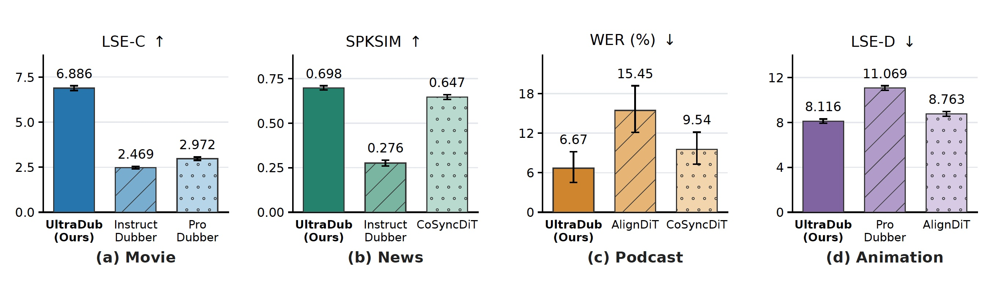
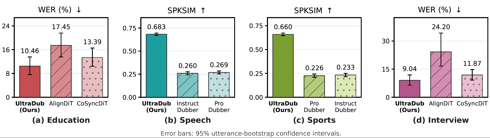
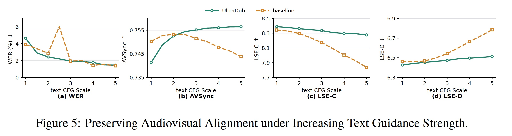
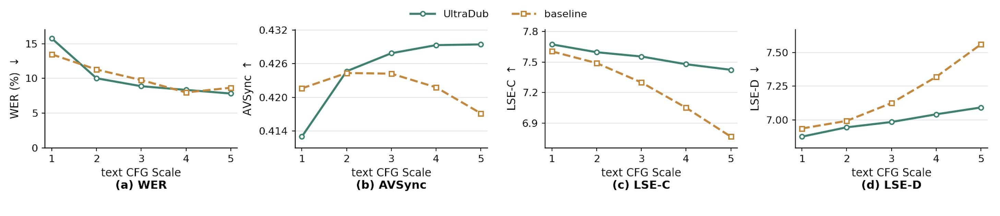
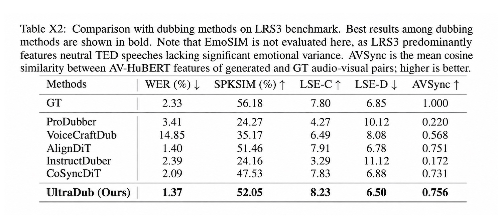
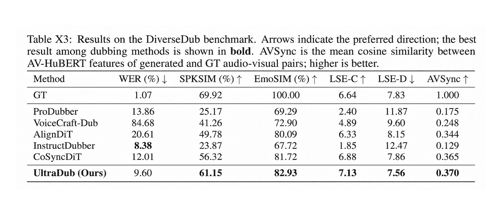
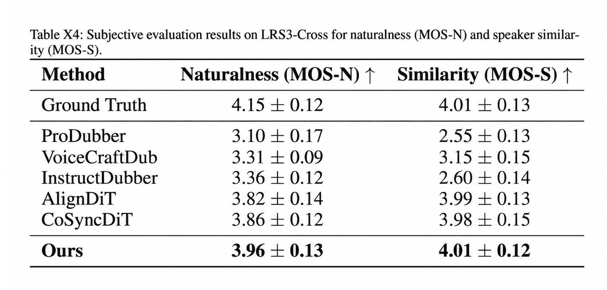

Demo & Supplementary Material
Higher LSE-C and lower WER are better. Bold values indicate the best generated result for each sample.
More Category-wise Results on DiverseDub
Detailed performance comparisons across the diverse real-world categories represented in DiverseDub.


Ablation on Flow Guidance Strategies
We compare our proposed Rhythm-anchored Trajectory Guidance (RTG) with the conventional classifier-free guidance (CFG) adopted by existing dubbing methods, isolating the effect of the inference-time flow guidance strategy.


Ablation on UltraDub Components
Table X1 isolates the contribution of each component. The SA+FFN backbone achieves a low WER but exhibits weak audiovisual alignment. Introducing either MDR memory substantially improves synchronization. The linguistic memory favors content accuracy, whereas the speaker-style memory improves speaker similarity, revealing the limitations of optimizing either context alone. Shared dual-memory retrieval better balances these objectives. Adding RTG consistently improves all four metrics and yields the best overall results. These gains are obtained without retuning the guidance scales, demonstrating that RTG improves the sampling trajectory rather than merely strengthening conditional guidance. Overall, the results validate the contributions of visually guided dual-memory retrieval and rhythm-anchored trajectory guidance.
Additional AVSync Results
Additional AVSync comparisons on the DiverseDub and LRS3 benchmarks show that UltraDub continues to achieve the best performance when audiovisual alignment is evaluated using cosine similarity.


Subjective MOS Evaluation
Following prior work, we conduct a five-point MOS evaluation with 20 listeners on 30 randomly selected LRS3-Cross samples. MOS-N evaluates speech naturalness, whereas MOS-S measures perceptual similarity to the reference speaker.

No samples in this selection.